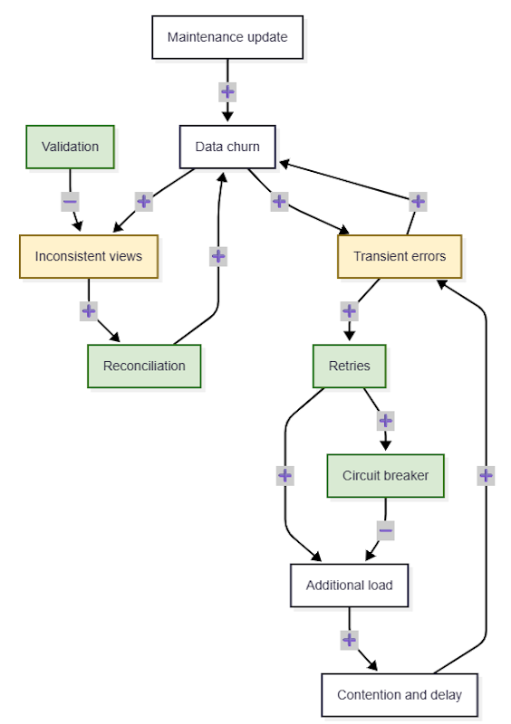

Signals & Levers in Practice: A Software-Architecture Case Study
Posted by bsstahl on 2026-09-22 and Filed Under: development
Sometimes, with software intensive systems, the symptoms of a problem are recognizable: the system is "slow", or a usage graph is spiking during critical events. Other times, the symptoms can more unsettling: users are reporting occasional data errors. The problem is intermittent, difficult to reproduce, and frustratingly resistant to simple explanations. Is it bad input? A particular user or workload? A recent deployment? A dependency behaving badly at just the wrong moment? Often, our first instinct is to look for a single cause. Signals & Levers, a new book by Elisabeth Hendrickson and Joel Tosi, offers a different way to approach the problem: treat these incidents as signals inside a larger causal structure, then look for the feedback loops and levers that can explain and change the system's behavior.
What I enjoyed most about Signals & Levers is that it helped me connect the dots between systems-thinking concepts and the practical problems engineers face every day. It reframes incidents like these as patterns rather than isolated events: the important question is not always "what broke?" but "what relationships, delays, and feedback loops made this behavior possible?" That perspective gave me a more useful way to think about intermittent data errors and the interventions that might address them. It also helped me connect several systems thinking exercises that I have been doing for years, things I'll write about separately later, with practical applications of those exercises.
The book uses examples from software development systems such as agile methodologies; this article applies those ideas to a software-architecture problem. For transparency, I should note that I received temporary access to a pre-release copy in order to review the book, but I am not affiliated with its publisher or authors and have no financial interest in its success. Links I provide to the book are for convenience and are not affiliate links. I receive no compensation for this post, or for anyone clicking on the links.
What follows is therefore both a review of some of the ideas I found useful and an attempt to apply them to a concrete software system.
A systems-thinking lens for software problems
The book gives us a number of tools for investigating a problem like this. These tools include Signals as the observable clues: the errors, retries, delays, and other identifyable sources of information about system behavior. Levers are the things we can adjust to attempt to make meaningful changes to the system. We can also identify Feedback loops to help explain why a problem persists or amplifies instead of disappearing on its own, and how pulling a particular lever might influence the system. Understanding these constructs allows us to look at the problem not as a collection of isolated errors, but as a system whose behavior we can observe, understand, and influence.
To make these ideas concrete, consider a software system designed to manage bus maintenance. It brings together information about vehicles, maintenance work, schedules, parts, and operational status so that people can plan work and understand and improve the condition of the fleet. Most of the time, the system appears to work as expected. Occasionally, however, users report that the data is wrong: a maintenance update is missing, a status appears inconsistent between views, or a notification isn't delivered properly. The errors are difficult to reproduce and do not seem tied to one particular user or action. That makes the obvious explanations tempting; user-error or other bad input, one faulty process, a noisy dependency, or a problem during a particular maintenance window. However, in this case, none of these possibilities fully explains the pattern. This problem gives us a concrete system in which to identify signals, consider possible levers, and examine the feedback loops described in the book.
Signals & Levers in this system (a few examples)
The first step is to resist the urge to explain the error before understanding its shape. Several signals are worth watching: how often records drift between views, whether retries increase around the same time, whether queues grow when downstream work slows, and whether the errors cluster in brief timing windows. None of these observations proves a cause by itself. Together, however, they can reveal that the problem is not random user behavior or one bad request, but a system whose components are influencing one another over time.
The next step is to consider what we might change. Possible levers include shaping retries, applying backpressure or concurrency limits, isolating a struggling dependency, tightening the ordering of writes, and adjusting reconciliation. These are not interchangeable fixes, and each carries a cost. The causal-loop diagram will help us identify which levers matter and trace how they might influence the system.
Feedback loops and causal structure
A causal-loop diagram makes relationships among these signals and possible levers easier to see than a list of symptoms. The diagram below offers one way to map the system before we draw conclusions about which relationships are reinforcing, which are balancing, and where an intervention might change its behavior.
To be absolutely clear: this diagram represents one possible model of the system, not a general architecture. Every system is different, so a diagram of your system may look completely different from this one.

Here, ➕ means that the connected variables move together, while ➖ means that they move in opposite directions. Yellow nodes are signals we observe, such as inconsistent views and transient errors. Green nodes are levers we can adjust, such as retry policy, validation, reconciliation, and circuit breakers.
One useful insight is not just that these signals occur together, but that they can reinforce one another. In this model, a transient error can trigger a retry; enough retries increase load; increased load creates contention and delay; and that delay produces more errors and still more retries. Balancing mechanisms such as validation, reconciliation, circuit breakers, and write throttling can interrupt that loop, although their effects may not be immediate. Replication lag, repair intervals, telemetry delay, and other time gaps can make the system appear unpredictable even when the underlying pattern is consistent. This model also suggests that validation and reconciliation may limit the effects of intermittent data problems without necessarily addressing the reinforcing retry, load, and contention loop that may be generating them, since they appear in different loops in the diagram.
The next step is to put our theories, developed using these tools, to the test. We can change the retry policy and observe whether inconsistency frequency and queue growth change with it. We can strengthen write ordering or reduce the number of places a write must reach, then watch for a reduction in drift. We can adjust the reconciliation interval and measure whether the repair process keeps up with new inconsistencies. Each experiment should change one meaningful lever, define the signals we expect to move, and account for the delays before deciding whether the hypothesis was supported.
This is where the book's ideas become practical for me. Signals & Levers provided the vocabulary for moving beyond the question "which component is broken?" and asking how the system's structure produces the behavior we observe. The bus-maintenance example makes the concepts tangible, but the method is not limited to data errors. The same patterns can make it easier for us to work through performance problems, reliability incidents, and any other situation where the cause is distributed across components and delayed over time.
Closing
When we identify that problems may be occurring in our systems, the most useful answer may not be to look for a single culprit. The problem may be a pattern of signals, levers, delays, and feedback loops spread across the system. This is the practical value I found in Signals & Levers: it offers a way to see those relationships, test our assumptions, and make more deliberate changes. The same approach can help us understand our own systems before their symptoms become incidents we can no longer ignore.